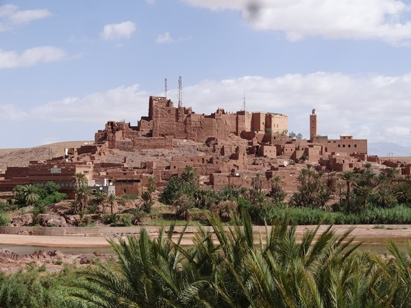
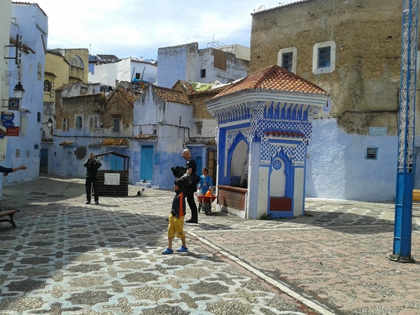
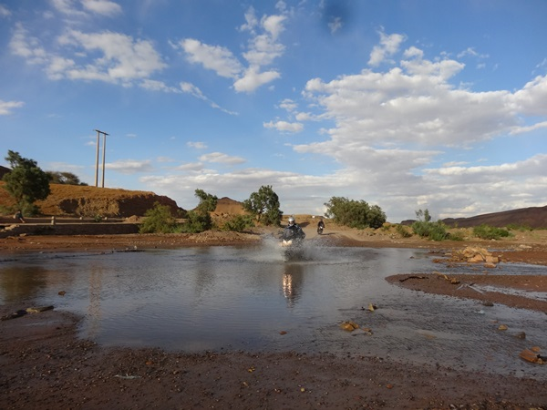
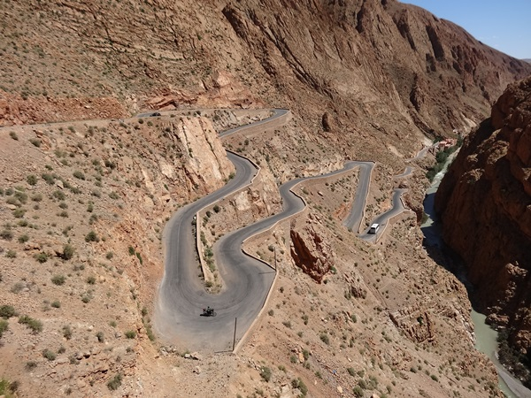
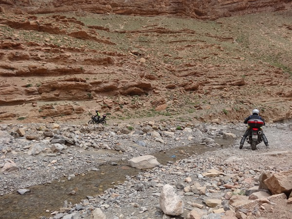
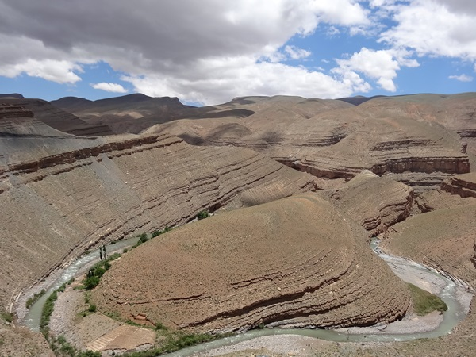

Witaj Afryko!
Z Malagi do Algeciras mamy do pokonania około 150 km, pada i jest tylko 13°C, choć to prawie czerwiec. W porcie w Algeciras jeździmy bez sensu jak skołowani starając się zrozumieć, o co tu chodzi. System jest taki: zostawiasz maszynę na parkingu dla motocykli, idziesz kupić bilet do kas jednego z przewoźników. Trzeba pokazać paszport i podać numery rejestracyjne. Z biletem jedziesz szukać bramki i – jeśli kiedyś ją znajdziesz – sprawdzają twój paszport i bilet. Potem jedziesz już pod prom i czekasz na znak, że możesz wjeżdżać na pokład. Pokład parkingowy jest wielki niemal jak boisko i cały zastawiony tirami upchniętymi jak sardynki w puszce. Obsługa przypina motocykle pasami do łańcuchów umocowanych do pokładu. W międzyczasie jakiś człowiek przynosi mój bilet…znalazł go na parkingu w porcie. Aż mi ciary przeszły po plecach – to bym sobie popłynął do Afryki. Bilet w obie strony kosztował 108E z 260 jakie miałem. Wchodzimy na górny pokład dwa pietra wyżej. Tam bar, Francja elegancja, stoliki, kanapy, sporo Marokańczyków wracających do kraju, kobiety w chustach i długich sukniach, ale eleganckie, sporo z nich z bardzo wyraźnym makijażem. Tu ponownie musimy okazać paszporty i bilety. Gdyby nie tamten człowiek, który znalazł mój bilet już bym pewnie wysiadał z promu.
Do you like to smoke hashish?
Po godzinie rejsu dobijamy do portu w Maroko. Zjeżdżamy z promu i już czeka kontrola paszportów. Nie ujechaliśmy kilkaset metrów i znowu: paszporty, dowody rejestracyjne i wypełnianie bardzo ważnych druczków potwierdzających czasowy import motocykli do Maroko. Bez tego dokumentu nie uda się wywieźć motocykla z powrotem, wiec lepiej go nie zgubić. Po męczących formalnościach wreszcie możemy jechać. Nasz pierwszy cel to odległe o 150 km Chewchaouene, znane jako Niebieskie Miasto.
Jadąc tam górską drogą wzdłuż wybrzeża mijamy dziesiątki a może setki czarnych, nędznie ubranych mężczyzn siedzących po obu stronach jezdni. Wyglądają, jakby na coś czekali. To coś to przemytnicy, którzy przerzucą ich do Europy. Pierwsze miasto to Tetouan umajone na przedmieściach tysiącami torebek foliowych z pobliskiego wysypiska, odór potworny. Gdy docieramy do Chewchaouene wreszcie robi się ciepło. Jeszcze sto lat temu była to budząca strach górska warownia nieprzychylna obcym. Założyli ją Żydzi i Muzułmanie uciekający z Hiszpanii. Gdy tylko parkujemy w jakimś mocno śmierdzącym zaułku podchodzi do mnie typ w dresach i pyta, czy chcę kupić haszysz. Nie chcę. Zwiedzamy miasto. Wrażenie robią na mnie pomalowane na niebiesko ściany starych kamienic, nawet chodniki są pociągnięte błękitem. W kontraście są czerwone dywany ulicznych sprzedawców, różnokolorowe kapcie, ozdobne piórami kapelusze ze słomy oraz kosze przypraw i owoców. Tylu odmian oliwek jeszcze nie widziałem. Ktoś rzuca po raz kolejny „hashish?”, ktoś inny na nasz widok krzyczy „Poloń – good people!”. Janusz coś kombinuje z jakimś chudzielcem i ma wyraźnie zadowoloną minę. Zjadamy nasz pierwszy marokański obiad z glinianego garnka o nazwie „tadżin”, zwiedzamy okolice i wracamy do motągów. Tam czeka na nas licencjonowany parkingowy i musimy się u niego wykupić za pilnowanie motocykli. Oplata to 10 dirhamów, czyli niecałe 1E. Następna miejscowość na naszej trasie to dziura o nazwie Bab Berett, gdzie pomimo zapadających ciemności na ulicy jest spory tłok . Szukamy noclegu – znajdujemy hotelik, Janusz idzie zapytać czy mają wolne pokoje, ale ja i tak już wiem, że tu motocykla na ulicy nie zostawię. Janusz wraca i mówi: „W środku pełno facetów, nawet na schodach siedzą, każdy coś pali. Właściciel mówi, że pokoi wolnych nie ma, ale zaprasza, żeby z nimi zapalić”. Jedziemy więc za miasto i na obrzeżach trafiamy na posterunek Policji. Policjant mówi, że hotelu tu nie ma. To dziwne, bo trzysta metrów dalej jest stacja benzynowa z hotelem. Polscy dzielnicowi mają zdecydowanie lepsze rozpoznanie terenowe. Jesteśmy pierwszymi gośćmi, specjalnie dla nas ściągają folie z materacy i nowej pościeli. Tanio nie jest. Właściciel podaje cenę 300 dirhamów za pokój, zgadzamy się. Wtedy zmienia zdanie i chce już 400. Ustalamy 350 dirhamów. Znowu jest tak zimno, że para leci z ust. Nie wiem, co obsługa hotelu wyprawiała między 1 a 4 nad ranem, piłowali coś, cięli, krzyczeli po arabsku – nie zmrużyłem oka.
Pij mleko, będziesz zdrowy.
Rano mgła i tylko 8 stopni. Jedziemy do Ketamy, do której podobno nikt rozsądny nie powinien jechać. Temperatura spada do 6°C i zaczyna padać. W życiu nie widziałem takiej mgły, to już było prawie pływanie w mleku a nie jazda. Nie widzę motocykla jadącego 3-4 metry przede mną. Gdy docieramy do Ketamy mgła trochę opada i zatrzymujemy się na marokańską specjalność, którą będziemy pić od teraz po kilka razy dziennie w całym kraju. Mocną herbatę ziołową z miętą i masą cukru. Właściciel lokalu do herbatki od razu proponuje coś do zapalenia, a Janusz wychodzi z nim podyskutować na osobności o pogodzie. Jak tak dalej pójdzie to na lokalne wyroby zabraknie mu miejsca w kufrze, bo miejscowi są tak szczodrzy, że 1000% gratis nie robi im różnicy. Gadanie o mafii i bandytach z Ketamy należy między bajki włożyć. Gdy wyjeżdżamy na górską drogę i robi się ładna pogoda oczom nie wierzę. Wszędzie, jak okiem sięgnąć rośnie marihuana, plantacjami są pokryte całe zbocza, każdy kawałek uprawnej ziemi rodzi setki kilogramów tego, za posiadanie czego w ilości 0.5 gr w tak nieskazitelnych moralnie krajach jak Rosja, Białoruś i nasze państwo wsadza się studentów do więzienia na potrzeby statystyki wykrywalności przestępczości narkotykowej.Rolnicy tu uprawiają gandzię w każdym ogródku. Janusz zatrzymuje Beemkę i wchodzi w szkodę, żeby pobrykać w zielsku. Rozbawił mnie widok stada owiec, które pasły się na polu marihuany wygryzając młode krzaczki z wielkim apetytem. Hasło „Pij mleko, będziesz zdrowy” w tym kontekście nabiera nowego znaczenia. Ja nie trawię laktozy, więc mleka też mi nie wolno.
Na pustynię
Nasz kolejny cel to wydmy w Taouz na granicy z Algierią, więc lecimy najszybszą trasą przez Fez, po drodze zażywając kąpieli w pierwszym spotkanym w Afryce jeziorze. W zatłoczonym i kiepsko pachnącym Fezie Janusz dostaje urodzinowy prezent – suszoną kiełbasę ze szlachetną pleśnią, którą kupiliśmy kilka dni temu we Francji za niewyobrażalne pieniądze. Jedziemy dalej raz w deszczu i chłodzie, raz w upale by trafić do Ifrane, afrykańskiego kurortu w szwajcarskim stylu. Mijaliśmy lepianki, dom i osiedla w kolorze brązowego błota, a tu taka niespodzianka. Gdy wyjeżdżamy z Ifrane na drodze zauważam małpę z oseskiem. Zatrzymuję się, żeby zrobić jej zdjęcie. Zsiadam z motocykla a ta myk i już siedzi na kanapie za kierownicą. Dwie sekundy zajęło jej otwarcie z suwaków tankbaga i następne dwie przeszukanie jego zawartości. Dobrze, że nie zauważyła kluczyków w stacyjce. Gdy zbliża się jeździec na koniu małpy uciekają. Jeździec też zwietrzył zdobycz – chce, żebym go fotografował w zamian za Euro. Wsiadam na motocykl i odjeżdżam, bo robi się natarczywy. Tego wieczoru nocujemy w hotelu w Midelt, gdzie spotykamy grupę niemieckich motocyklistów.
Przełęcze
Tego samego dnia jedziemy malowniczymi, górskimi drogami do Ouarzazate, potem na przełęcz Tizi-n-Test (2092 m. npm.), która jest w mojej ocenie najpiękniejszą jaką dane mi było do tej pory zobaczyć w ogóle. Do szczytu przełęczy da się dojechać nawet osobowym samochodem, asfalt jest idealny i doskonale wyprofilowany. Dalej droga jest wąska, dziurawa, miejscami nieutwardzona i nie miną się na niej dwa samochody. Nocujemy w Ourigane w oberży Chez Momo u podnóża drogi na przełęcz, na terenie Parku Narodowego Toubkal. Takiej ilości kwiatów i skał w różnych kolorach w tym krwisto czerwonych nigdy wcześniej nie widziałem. Przepiękne miejsce. To tylko oberża, ale żaden pięciogwiazdkowy hotel nie może się z tym miejscem równać pod względem urody. O 22:00 muezin zaczął nawoływać z meczetu do modlitwy. Potem dołączył się do niego drugi, z innej górskiej wioski. Ten sam tekst, ale inna, autorska melodia. Potem dołączył się trzeci i czwarty z innych wsi w górach. To było niesamowite, w ich głosach było słychać ogromną ekspresję. Dla mnie warto było przyjechać do Maroko, żeby to usłyszeć. To moje najsilniejsze wspomnienie z tego wyjazdu. Następnego dnia rano przebijamy się na druga stronę pasma górskiego i zdobywamy przełecz Tizi-n-Tischka (2260 m.npm), również piękną z niesamowitymi formacjami skalnymi i przełomami rzek, ale wrażenie z poprzedniego dnia jeszcze mnie nie opuściło. Wracamy na Ouarzazate i nocujemy w Teneghir.
Kaniony
Kolejny nasz punkt wypadowy to miasto Teneghir, skąd pojedziemy do kanionów Todra i Dades. Podwożę tu na stopa jakiegoś nomadę, który jest tak szczelnie opatulony w stare łachmany, że ledwo widać mu oczy. Nie wiem kim jest, ale to co zrobiłem budzi uznanie wśród gapiów. Krzyczą w moim kierunku po francusku, że bardzo mi dziękują i pokazują dłonią na serce. W hotelu motocykle stoją zaparkowane w jadalni. Tu mają być bezpieczne. Mam ochotę na piwo i pytam obsługę, gdzie je dostanę. Okazuje się, że to nie taka prosta sprawa, trzeba wezwać taksówkę i kogoś, kto pojedzie dwa kilometry do miejsca, gdzie można je dostać. Jeśli to tak skomplikowane logistycznie, to ja rezygnuję, aż tak mi się pić nie chce. Wówczas mój dealer piwa ciągnie mnie do hotelu, wyciąga spod stołu skrzynię i wyciąga jakieś tabletki. Mówi, że są tak samo dobre jak piwo bo namieszają mi konkretnie w głowie i w oczach, wie bo raz spróbował. Ręce mi opadły. Gość nie rozumie, że chciałem piwo, bo pić mi się chce. Dla niego najwyraźniej jeśli ktoś chce się napić alkoholu to po to, żeby się odurzyć. Następnego dnia rano po przejechaniu wąwozu Todra, który zdecydowanie warto zobaczyć jedziemy skrótem na wąwóz Dades, żeby zaoszczędzić kilkadziesiąt kilometrów. Przy wlocie na skrót zatrzymujemy się bo droga wygląda nieciekawie, kamienie i szuter. Siedzi tam jakiś człowiek, który mówi, że ta droga tylko 20 km jest taka „very good” jak teraz, dalej przez 27 km jest „impossible” do przejechania, tylko konno albo na piechotę bo wiedzie korytem rzeki i ostatnie 7 km będzie w wodzie na 10-20 cm. Chcemy to zobaczyć, najwyżej zawrócimy. Ten wówczas prosi, żebym zabrał go na stopa bo ma w górach rodzinę nomadów, a on pokaże od którego miejsca trzeba wjechać do rzeki. Jadę 20 km na stojąco a on grzecznie siedzi, pozdrawiamy mijanych po drodze nomadów na koniach. Nie jest źle, coś jak SH20 rok temu w Albanii. Po 20 km mój pasażer każe mi się zatrzymać i wskazuje miejsce, gdzie jest zjazd do koryta rzeki. Jeśli widzieliście górską rzekę w Polsce gdy między głazami płynie jej środkiem mały strumyczek, to wyglądało to mniej więcej tak samo, z tym że rzeka miejscami była szeroka jak Bug czy Narew a strumyczków kilka.
Długa droga do domu
Ruiny starożytnego rzymskiego Volubilis to ostatni punkt naszej wyprawy do Maroko. Tą największą archeologiczną atrakcję kraju odwiedzamy w promieniach zachodzącego słońca.Znowu po ciemku szukamy hotelu i trwa to tyle, że w tym czasie robimy 100 km. Trafiamy do motelu Riff, gdzie zaradny szef mimo braku pokoi organizuje nam łóżka, materace, wynosi część mebli i za około 25 zł od osoby zyskujemy czteroosobowy pokój z łazienką. Gdy po 9 dniach walki z Afryką ściągamy buty Ania kapituluje i idzie spać na dworze. Tam też nie jest lekko, bo kilkunastu arabów po wypaleniu kilku fajek haszu nabiera ochoty ma kąpiel w basenie, krzyki i generalnie darcie japy do rana. Wstaję o 7 i dokonuję zemsty – trzaskam drzwiami, krzyczę, że śniadanie gotowe, włączam niechcący alarm w zaparkowanym pod ich oknami alarm w motocyklu. Po 15 minutach uczestnicy nocnej libacji wyłażą z pokoi i obserwują nieprzychylnie jak się pakuję. Po wydaniu reszty dirhamów po południu wsiadamy na prom. Następnego dnia rano z motocyklami na przyczepie ruszamy do Polski, a chłopaki wsiadają w samolot. Tym razem w 3 dni pokonujemy kolejne 3 500 km. Maroko jest piękne, ludzie niesłychanie uprzejmi, grzeczni i dowcipni, ale tęsknię już do Polski. Film z naszej wyprawy można obejrzeć TU. Korzystałem z darmowej wersji programu do montażu i dopiero po zakończeniu pracy zauważyłem, że przez większość czasu na środku kadru wyświetlany jest napis. Tak więc jest to kino dla wytrwałych.
